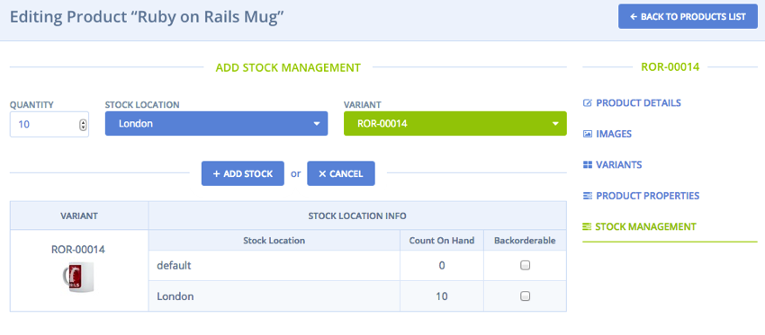
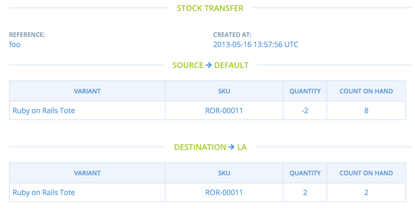
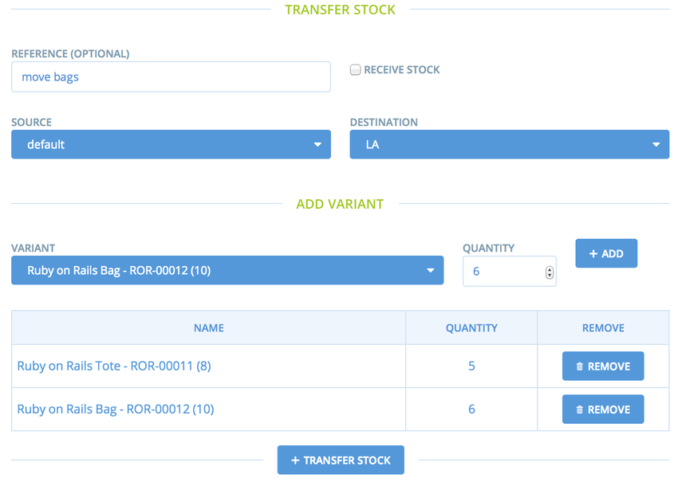

Overview
Spree uses a hybrid approach for tracking inventory: On-hand inventory is stored as a count on a variant StockItem. This gives good performance for stores with large inventories. Back-ordered, sold, or shipped products are stored as individual InventoryUnit objects so they can have relevant information attached to them.
What if you don’t need to track inventory? We have come up with a design that basically shields users of simple stores from much of this complexity. Simply set Spree::Config[:track_inventory_levels] to false and you never have to worry about it.
New products created in the system can be given a starting “on hand” inventory level. You can subsequently set new inventory levels and the correct things will happen, e.g. adding new on-hand inventory to an out-of-stock product that has some backorders will first fill the backorders then update the product with the remaining inventory count.
As of Spree 2.0, there is a new Stock Management system in place that allows for fine-grained control over inventory for products and variants.
Stock Management
Stock Locations
Stock Locations are the locations where your inventory is shipped from. Each StockLocation has many stock_items and stock_movements.
Stock Locations are created in the admin interface (Configuration → Stock Locations). Note that a StockItem will be added to the newly created StockLocation for each variant in your application.
Stock Items
Stock Items represent the inventory at a stock location for a specific variant. Stock item count on hand can be increased or decreased by creating stock movements.
Note: Stock items are created automatically for each stock location you have. You don’t need to manage these manually.
Count On Hand is no longer an attribute on variants. It has been moved to stock items, as those are now used for inventory management.
Stock Movements

Stock movements allow you to manage the inventory of a stock item for a stock location. Stock movements are created in the admin interface by first navigating to the product you want to manage. Then, follow the “Stock Management” link in the sidebar.
As shown in the image above, you can increase or decrease the count on hand available for a variant at a stock location. To increase the count on hand, make a stock movement with a positive quantity. To decrease the count on hand, make a stock movement with a negative quantity.
Stock Transfers

Stock transfers allow you to move inventory in bulk from one stock location to another stock location. Transfers are created in the admin interface by first navigating to the Configuration page. Then, follow the “Stock Transfers” link.

As shown in the image above, you can move stock from one location to a different location. This is done by selecting a source location, a destination location, and one or more variants. You are also able to set the quantity for each variant individually.
If you check “Receive Stock” while creating a new transfer, your stock transfer will only have a destination stock location.
Return Authorizations
After an order is shipped, administrators can approve the return of some part (maybe all) of an order via the “Return Authorizations” tab in the single order console. To create a new return authorization, you should indicate which part of the order is being returned, what the reason for the return is, and what the resulting credit should be. The sale price of the product is shown for reference, but you can choose any value you like.
After the authorization is created, you can return later to its edit page and click on the ‘Received’ button to register the return of goods. This will create a credit adjustment on the order, which you can apply (i.e. refund) to the order’s credit card via the payments screen. Spree will log the events in the order’s history.